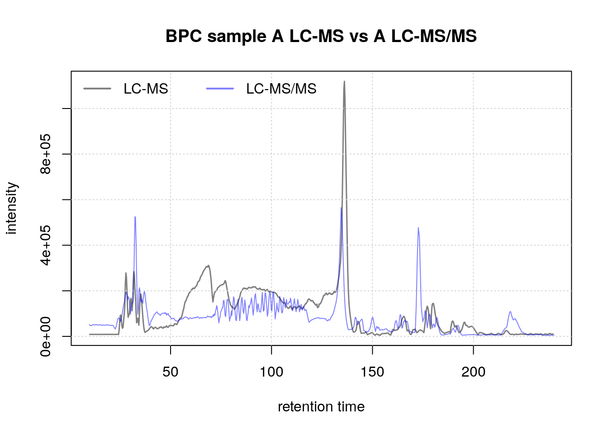
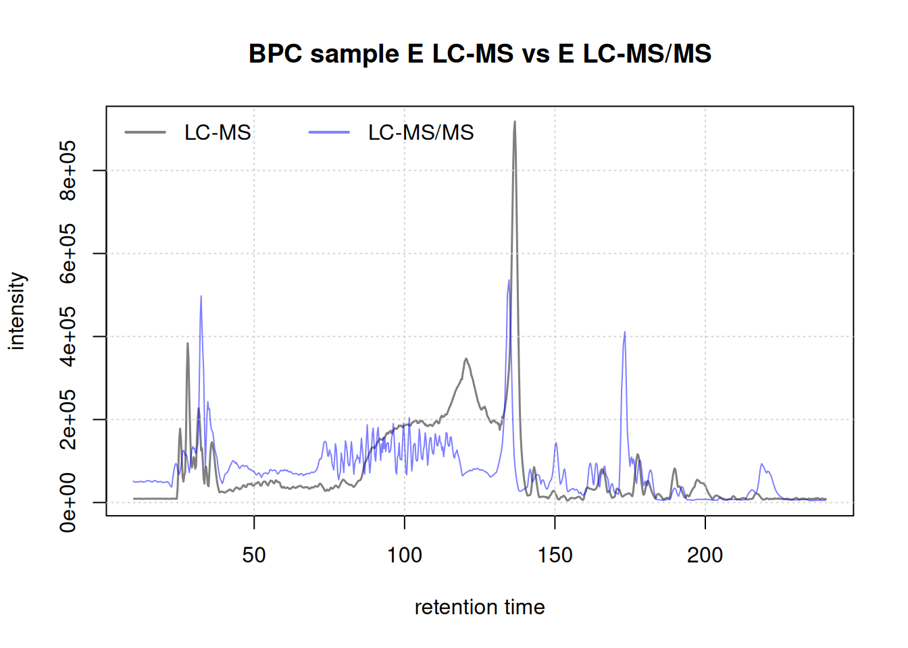
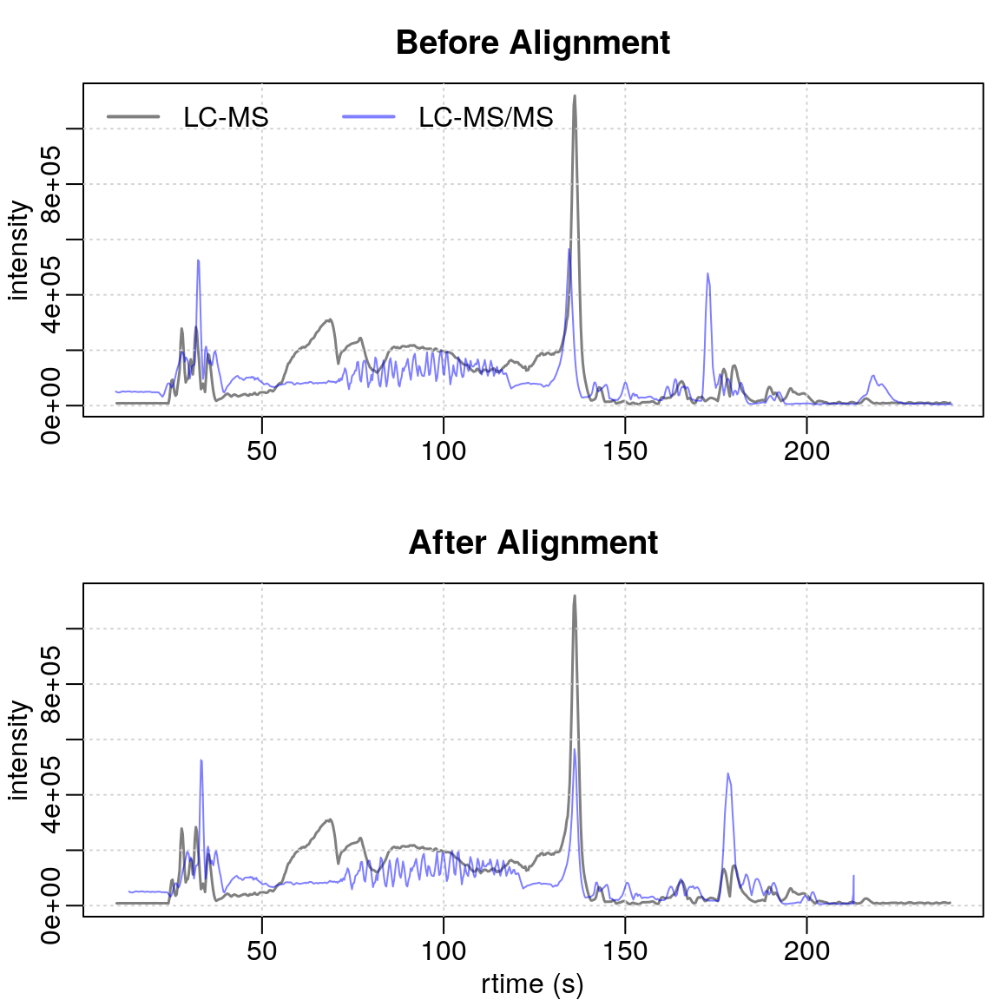
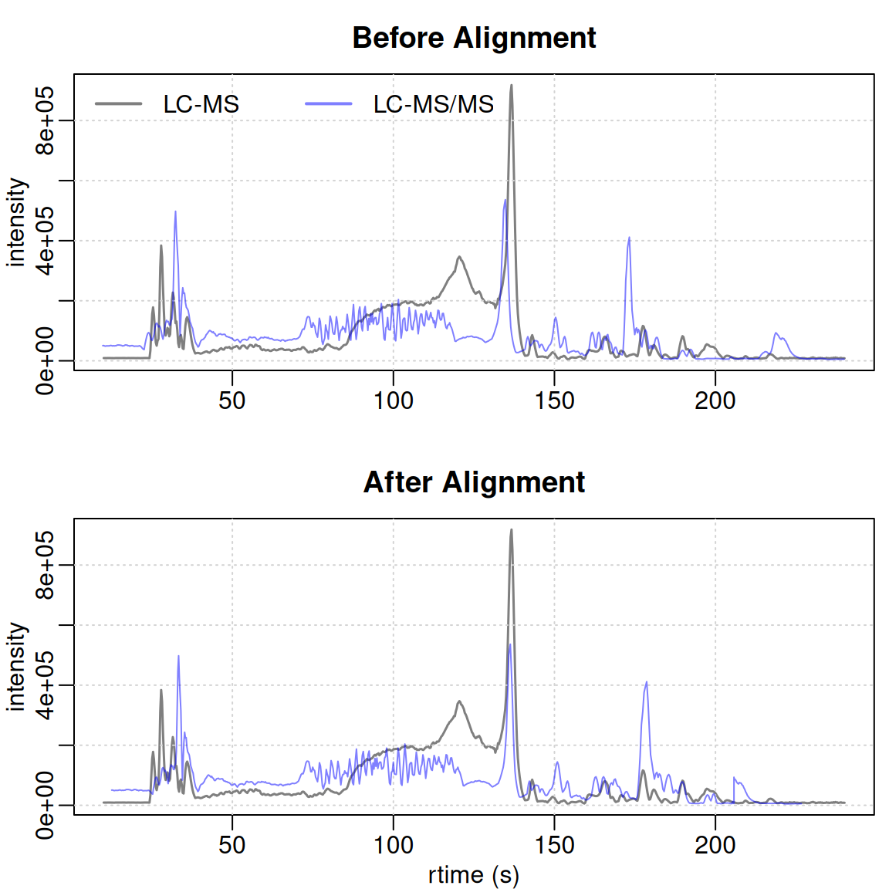
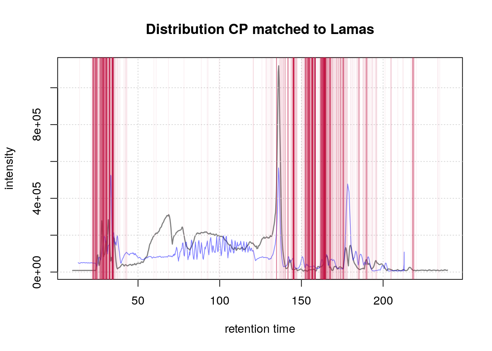
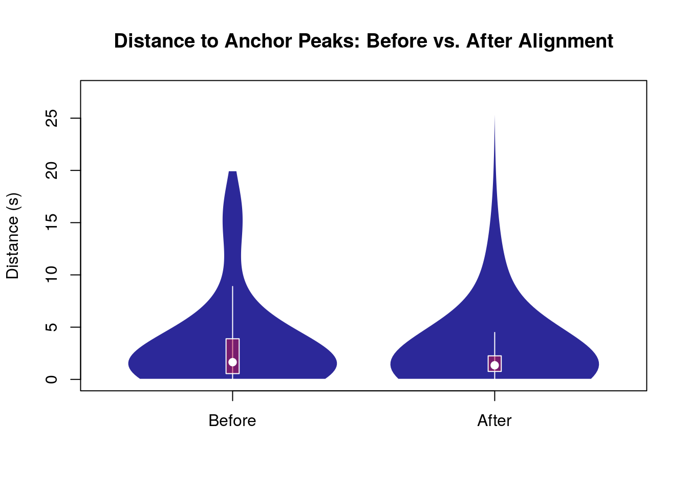
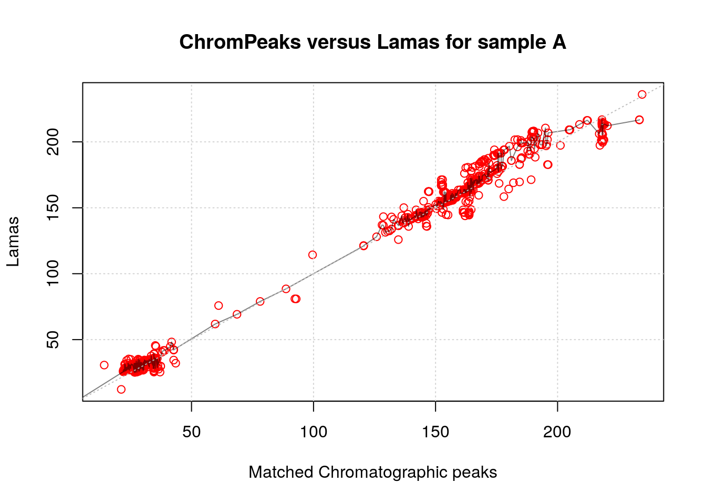

Seamless Alignment: Merging New Data with and Existing Preprocessed Dataset
2024-10-22
Source:vignettes/alignment-to-external-dataset.qmd
Introduction
In certain experiments, aligning datasets recorded at different times is necessary. This can involve comparing runs of the same samples from different laboratories or matching MS2 data to an initial MS1 run. Variation in retention time across laboratories and LC systems often requires an alignment step using adjustRtime() with the LamaParama parameter.
As described in the data description vignette, some of our samples were run twice: once in LC-MS mode and again in LC-MS/MS mode. This tutorial will show how to align the LC-MS/MS run to the preprocessed LC-MS dataset.
The following packages are needed:
Setting parallel processing to improve the efficiency of the process:
#' Set up parallel processing using 2 cores
if (.Platform$OS.type == "unix") {
register(MulticoreParam(2))
} else {
register(SnowParam(2))
}Load preprocessed LC-MS object
First, let’s load our pre-processed LC-MS object, all the steps to get this object is shown in the End-to-end worflow vignette.
load("/shared/data/preprocessed_lcms1.RData")Load unprocessed LC-MS/MS data
Next, we will load the unprocessed LC-MS/MS data from the MetaboLights database:
#' Load form the MetaboLights Database
param <- MetaboLightsParam(mtblsId = "MTBLS8735",
assayName = paste0("a_MTBLS8735_LC-MSMS_positive_",
"hilic_metabolite_profiling.txt"),
filePattern = ".mzML")
lcms2 <- readMsObject(MsExperiment(),
param,
keepOntology = FALSE,
keepProtocol = FALSE,
simplify = TRUE)We will adjust the sampleData() of the LC-MS/MS object to make it easier to access:
#adjust sampleData
colnames(sampleData(lcms2)) <- c("sample_name", "derived_spectra_data_file",
"metabolite_asssignment_file",
"source_name",
"organism",
"blood_sample_type",
"sample_type", "age", "unit", "phenotype")
#let's look at the updated sample data
sampleData(lcms2)[, c("derived_spectra_data_file",
"phenotype", "sample_name", "age")] |>
kable(format = "pipe")| derived_spectra_data_file | phenotype | sample_name | age |
|---|---|---|---|
| FILES/MS_2_A_POS.mzML | CVD | A | 53 |
| FILES/MSMS_2_A_CE20_POS.mzML | CVD | A | 53 |
| FILES/MSMS_2_A_CE30_POS.mzML | CVD | A | 53 |
| FILES/MSMS_2_A_CES_POS.mzML | CVD | A | 53 |
| FILES/MS_2_E_POS.mzML | CTR | E | 66 |
| FILES/MSMS_2_E_CE20_POS.mzML | CTR | E | 66 |
| FILES/MSMS_2_E_CE30_POS.mzML | CTR | E | 66 |
| FILES/MSMS_2_E_CES_POS.mzML | CTR | E | 66 |
| FILES/MS_2_STUDY_POOL_POS.mzML | SP | NA | |
| FILES/MSMS_2_STUDY_POOL_CE20_POS.mzML | SP | NA | |
| FILES/MSMS_2_STUDY_POOL_CE30_POS.mzML | SP | NA | |
| FILES/MSMS_2_STUDY_POOL_CES_POS.mzML | SP | NA |
We will only keep the MS runs (not MS/MS) and remove pooled samples, focusing on samples A and E that are common to both runs.
# Only keep MS run
lcms2 <- lcms2[!grepl("MSMS", sampleData(lcms2)$derived_spectra_data_file),]Before alignment, ensure the retention time (RT) ranges match between the datasets:
We need to adjust the RT range for the LC-MS/MS object to match the LC-MS data:
Comparing chromatograms
To evaluate retention time shifts, we’ll plot the base peak chromatogram (BPC):
idx_A <- which(sampleData(lcms1)$sample_name == "A")
idx_E <- which(sampleData(lcms1)$sample_name == "E")
bpc1 <-chromatogram(lcms1[c(idx_A,idx_E)], aggregationFun = "max",
msLevel = 1)Processing chromatographic peaks
bpc2 <- chromatogram(lcms2, aggregationFun = "max", msLevel = 1)Compare run1 sample A with run2 sample A
plot(bpc1[1,1], col = "#00000080",
main = "BPC sample A LC-MS vs A LC-MS/MS", lwd = 1.5, peakType = "none")
grid()
points(rtime(bpc2[1, 1]), intensity(bpc2[1, 1]), col = "#0000ff80", type = "l")
legend("topleft", col = c("#00000080", "#0000ff80"),
legend = c("LC-MS", "LC-MS/MS"), lty = 1, lwd = 2, horiz = TRUE, bty = "n")
Similarly, compare the BPC for sample E:
plot(bpc1[1, 2], col = "#00000080",
main = "BPC sample E LC-MS vs E LC-MS/MS", lwd = 1.5, peakType = "none")
grid()
points(rtime(bpc2[1, 2]), intensity(bpc2[1, 2]), col = "#0000ff80", type = "l")
legend("topleft", col = c("#00000080", "#0000ff80"),
legend = c("LC-MS", "LC-MS/MS"), lty = 1, lwd = 2, horiz = TRUE, bty = "n")
Peak detection
Perform peak detection and refining before alignment, as detailed in the end-to-end vignette. The same setting were applied.
param <- CentWaveParam(peakwidth = c(1, 8), ppm = 15, integrate = 2)
lcms2 <- findChromPeaks(lcms2, param = param, chunkSize = 2)
param <- MergeNeighboringPeaksParam(expandRt = 2.5, expandMz = 0.0015,
minProp = 0.75)
lcms2 <- refineChromPeaks(lcms2, param = param, chunkSize = 2)Alignment
Now, we will attempt to align these two samples with the previous dataset. The first step is to extract landmark features (referred to as lamas). To achieve this, we will identify the features present in every phenotype group of the lcms1 dataset. To do so, we will categorize (using factor()) our data by phenotype and only retain the QC samples. This variable will be utilized to filter the features using the PercentMissingFilter parameter within the filterFeatures() function. Here, by setting threshold = 0 we select the features present in all QC samples.
f <- sampleData(lcms1)$phenotype
f[f != "QC"] <- NA
lcms1 <- filterFeatures(lcms1, PercentMissingFilter(threshold = 0, f = f),
filled = FALSE)3694 features were removed
lcms1_mz_rt <- featureDefinitions(lcms1)[, c("mzmed","rtmed")]
head(lcms1_mz_rt) mzmed rtmed
FT0001 50.98979 203.6001
FT0002 51.05904 191.1675
FT0003 51.98657 203.1467
FT0004 53.02036 203.2343
FT0005 53.52080 203.1936
FT0007 54.01010 235.9032
nrow(lcms1_mz_rt)[1] 5374This is what the lamas input should look like for alignment. In terms of how this method works, the alignment algorithm matches chromatographic peaks from the experimental data to the lamas, fitting a model based on this match to adjust their retention times and minimize differences between the two datasets.
Now we can define our param object LamaParama to prepare for the alignment. Parameters such as tolerance, toleranceRt, and ppm relate to the matching between chromatographic peaks and lamas. Other parameters are related to the type of fitting generated between these data points. More details on each parameter and the overall method can be found by searching ?adjustRtime. Below is an example using default parameters.
param <- LamaParama(lamas = lcms1_mz_rt, method = "loess", span = 0.5,
outlierTolerance = 3, zeroWeight = 10, ppm =20,
tolerance = 0, toleranceRt = 20, bs = "tp")The matchLamaChromPeaks() function facilitates the assessment of how well the lamas correspond with the chromatographic peaks in each file. We then extract the matched results using the matchedRtimes() function. This will be used later to evaluate the alignment.
param <- matchLamasChromPeaks(lcms2, param = param)
ref_vs_obs <- matchedRtimes(param)Now we can adjust the retention time of the LC-MS/MS dataset using the adjustRtime() function.
#' input into `adjustRtime()`
lcms2 <- adjustRtime(lcms2, param = param)
lcms2 <- applyAdjustedRtime(lcms2)Evaluation
We extract the base peak chromatogram (BPC) of our aligned object:
#' evaluate the results with BPC
bpc2_adj <- chromatogram(lcms2, aggregationFun = "max",
msLevel = 1)Visualizing Alignment Quality
To evaluate the performance of our alignment process, we generate plots comparing the alignment of the reference dataset (in black) with our LC-MS data before (in red) and after (in blue) the adjustment.
#' BPC of sample A
par(mfrow = c(2, 1), mar = c(2.5, 2.5, 2.5, 0.5), mgp = c(1.5, 0.5, 0))
plot(bpc1[1, 1], col = "#00000080", main = "Before Alignment", lwd = 1.5,
peakType = "none", xlab = NA)
grid()
points(rtime(bpc2[1,1]), intensity(bpc2[1,1]),
type = "l",
col = "#0000ff80")
legend("topleft", col = c("#00000080", "#0000ff80"),
legend = c("LC-MS", "LC-MS/MS"), lty = 1, lwd = 2, horiz = TRUE, bty = "n")
plot(bpc1[1, 1], col = "#00000080", main = "After Alignment", lwd = 1.5,
peakType = "none", xlab = "rtime (s)")
grid()
points(rtime(bpc2_adj[1,1]), intensity(bpc2_adj[1,1]),
type = "l",
col = "#0000ff80")
#' BPC of sample B
par(mfrow = c(2, 1), mar = c(2.5, 2.5, 2.5, 0.5), mgp = c(1.5, 0.5, 0))
plot(bpc1[1, 2], col = "#00000080", main = "Before Alignment", lwd = 1.5,
peakType = "none", xlab = NA)
grid()
points(rtime(bpc2[1, 2]), intensity(bpc2[1, 2]), type = "l",
col = "#0000ff80")
legend("topleft", col = c("#00000080", "#0000ff80"),
legend = c("LC-MS", "LC-MS/MS"), lty = 1, lwd = 2, horiz = TRUE, bty = "n")
plot(bpc1[1, 2], col = "#00000080", main = "After Alignment", lwd = 1.5,
peakType = "none", xlab = "rtime (s)")
grid()
points(rtime(bpc2_adj[1, 2]), intensity(bpc2_adj[1, 2]), type = "l",
col = "#0000ff80")
Although the overall matching is imperfect due to initial sample issues, certain regions show significant improvement. The alignment of the signal’s start is particularly well done. Specifically, the regions right before and after 150 seconds show substantial improvement.
Below is a visualization of the distribution of chromatographic peaks matched to anchor peaks (Lamas) for Sample A. The red vertical lines represent the positions of these matched peaks.
#' BPC of the first sample with matches to lamas overlay
par(mfrow = c(1, 1))
plot(bpc1[1, 1], col = "#00000080", main = "Distribution CP matched to Lamas",
lwd = 1.5,
peakType = "none")
points(rtime(bpc2_adj[1, 1]), intensity(bpc2_adj[1, 1]), type = "l",
col = "#0000ff80")
grid()
abline(v = ref_vs_obs[[1]]$obs, col = "#c4114510")
Quantitative Evaluation of Alignment
To quantitatively assess the quality of the alignment, we compute the distance between the chromatographic peaks in our LC-MS data and the anchor peaks (Lamas) both before and after the alignment.
library(vioplot)
# Extract data for sample 3 directly
ref_obs_sample_1 <- ref_vs_obs[["1"]]
# Calculate distances before and after alignment
dist_before <- abs(ref_obs_sample_1$obs - ref_obs_sample_1$ref)
dist_after <- abs(chromPeaks(lcms2)[ref_obs_sample_1$chromPeaksId,
"rt"] - ref_obs_sample_1$ref)
# Create a data frame for plotting
distances <- data.frame(
Distance = c(dist_before, dist_after),
Alignment = rep(c("Before", "After"), each = length(dist_before))
)
# Set factor levels for Alignment to ensure correct order
distances$Alignment <- factor(distances$Alignment, levels = c("Before", "After"))
# Plot distances between anchor peaks between the two runs before and after alignment.
vioplot(Distance ~ Alignment, data = distances, xlab = "",
rectCol = "#c4114580",
lineCol = "white",
col="#17138fe8",
border = "white",
ylab = "Distance (s)",
main = "Distance to Anchor Peaks: Before vs. After Alignment")
Furthermore, a more detailed examination of the matching and the model used for fitting each file is possible. Numerical information can be obtained using the summarizeLamaMatch() function. From this, the percentage of chromatographic peaks utilized for alignment can be computed relative to the total number of peaks in the file. Additionally, it is feasible to directly plot() the param object for the file of interest, showcasing the distribution of these chromatographic peaks along with the fitted model line.
#' Access summary of matches and model information
summary <- summarizeLamaMatch(param)
summary Total_peaks Matched_peaks Total_lamas Model_summary
1 6832 1825 5374 1666, c(....
2 6860 1785 5374 1617, c(....
3 7588 2082 5374 1869, c(....
#' Coverage for each file
summary$Matched_peaks / summary$Total_peaks * 100[1] 26.71253 26.02041 27.43806
#' Access the information on the model of for the first file
summary$Model_summary[[1]]Call:
loess(formula = ref ~ obs, data = rt_map, weights = weights,
span = span)
Number of Observations: 1666
Equivalent Number of Parameters: 7.38
Residual Standard Error: 2.315
Trace of smoother matrix: 8.13 (exact)
Control settings:
span : 0.5
degree : 2
family : gaussian
surface : interpolate cell = 0.2
normalize: TRUE
parametric: FALSE
drop.square: FALSE
#' Plot obs vs. lcms1 with fitting line
plot(param, index = 1L, main = "ChromPeaks versus Lamas for sample A",
colPoint = "red")
abline(0, 1, lty = 3, col = "grey")
grid()
Conclusion
This tutorial demonstrated how to align LC-MS and LC-MS/MS datasets to correct retention time shifts, crucial for handling data from different runs or platforms. We preprocessed the data, detected chromatographic peaks, and used landmark features (lamas) from QC samples to adjust retention times via the adjustRtime() function. Visual comparisons of base peak chromatograms before and after alignment, along with distance calculations, showed clear improvements in RT synchronization.
Ultimately, aligning chromatographic data ensures that subsequent analyses, such as feature extraction and statistical comparisons, are based on consistent time points, improving data quality and reliability. This tutorial outlined an end-to-end workflow that can be adapted to various LC-MS-based metabolomics studies, helping researchers manage retention time variation effectively.